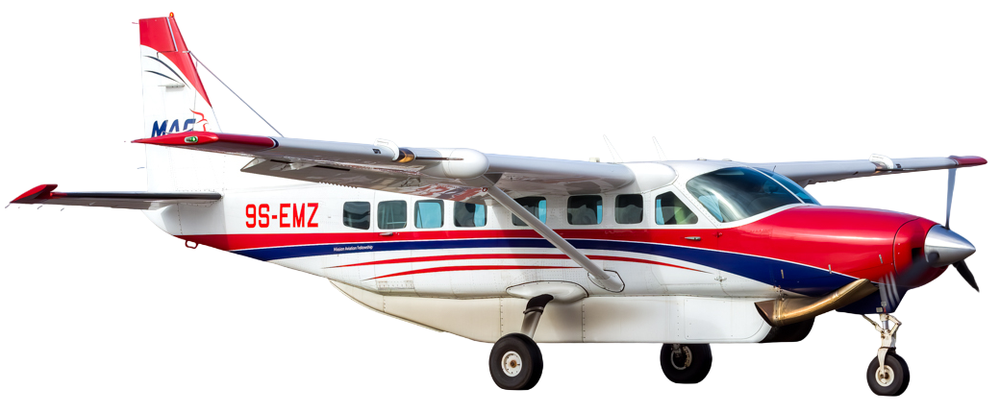
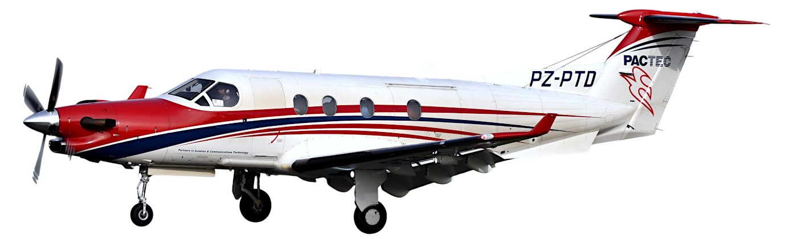

Je m'appelle Nino Carpentier et j'ai 17 ans. Je suis passionné d'aviation et je souhaiterais servir Dieu au travers des communautés les plus pauvres de la Terre. En mars 2025, j'ai découvert l'ONG chrétienne Mission Aviation Fellowship (MAF). Je me suis très vite dit que devenir pilote pour cette mission serait l'accomplissement de mon rêve.

La vision de la MAF est de voir les communautés les plus isolées de
notre planète changées par l'amour de Jésus-Christ. Sa mission est
d'apporter aide, espoir et guérison à ces communautés au moyen de
l'aviation.
La MAF utilise environ 120 avions qui sont principalement des Cessna
Caravan, mais aussi des Cessna 206, des GA8 Airvan, des Kodiak 100 et un
Pilatus PC-12 (le plus beau et le plus performant selon moi). Elle opère
dans 25 pays disséminés en Amérique du Sud, en Afrique, en Asie du
Sud-Est et en Océanie, comme l'Équateur, le Lesotho, l'Ouganda, la
Papouasie-Nouvelle Guinée, le Timor Leste ou encore la terre d'Arnhem en
Australie.
1400 pilotes, mécaniciens aéronautiques, chefs de programme,
gestionnaires, personnels au sol et bien d'autres sont engagés au
service de ceux qui ne pourraient pas être atteints autrement que par
les airs. La MAF est partenaire de plus de 1500 organisations
missionnaires, de développement et de soins. Elle leur épargne, ainsi
qu'aux communautés, des heures, des jours et parfois même des semaines
de marche à travers la brousse ou de trajet sur des routes en très
mauvais état. Les nombreuses évacuations médicales effectuées par les
pilotes sauvent chaque jour des vies dans des pays où l'accès aux soins
est difficile, voire inexistant. Les avions de la MAF transportent des
missionnaires, des pasteurs, du personnel de santé, des traducteurs,
mais aussi des denrées alimentaires et des Bibles.
En résumé, Mission Aviation Fellowship fait quotidiennement la
différence entre la vie et la mort pour ces communautés du bout du
monde, dont nous ignorons ou oublions souvent l'existence.

Revenons-en à présent à mon projet. Pour devenir pilote de la MAF, il me
faudra suivre une formation théorique et pratique dont la durée moyenne
est de deux ans. Cela ne se fera pas avant quelques années car le coût
de la formation est élevé.
Cependant, je me suis vu offrir une place pour un week-end de découverte
de l'un des centres de formation des pilotes de la MAF, MATC (Mission
Aviation Training Centre), aux Pays-Bas. Ce voyage me permettra de
découvrir le centre, de participer à une leçon de pilotage, d'effectuer
un vol sur simulateur, de faire des ateliers de mécanique aéronautique,
d'échanger avec les différents instructeurs, avec les élèves pilotes,
ainsi qu'avec des jeunes qui partagent ma passion. En bref, j'aurai
l'occasion d'en découvrir plus sur ce qui est attendu d'un pilote et
également sur la vie de missionnaire.
Le Vision Trip aura lieu à la mi-juillet. Pour pouvoir le payer, je dois
atteindre un montant de 350£ de dons, soit environ 410€, avant le 30
juin. Je fais donc appel à votre générosité. Vous vous demandez
certainement pourquoi il est demandé que je mène cette petite campagne
de dons. En fait, les missionnaires qui travaillent pour la MAF doivent,
avant de pouvoir partir sur le terrain, se constituer une équipe de
partenaires, financiers mais aussi de prière. La levée de fonds me
permet donc de me préparer à ce qui m'attend en tant que futur pilote
missionnaire.